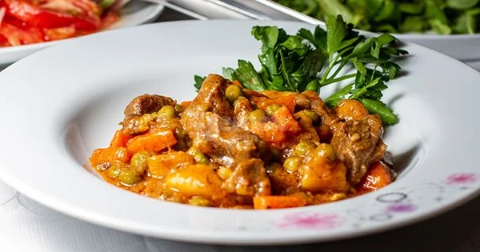

Turkish Cuisine
Turkish cuisine continues to enchant taste buds around the world, drawing inspiration from its rich history. Reflecting a cultural heritage spanning thousands of years, Turkish cuisine is known for the elegant dance of diversity and flavors. The mystery of Turkish cuisine unfolds through the skillful use of fresh and natural ingredients. From lamb tandir to various kebabs, a wide array of mezes to olive oil dishes, each dish tells a unique story. Enriched with the magical touch of spices, Turkish cuisine embodies hospitality and sharing. On our Turkish cuisine page, get ready to embark on a delightful journey. Traditional flavors meet modern touches, inviting your taste buds to Turkey's feast of flavors. Each recipe is a story, each taste a reflection of a culture. Explore the richness of our culinary culture on our Turkish cuisine page and step into a flavorful adventure!
Forest Kebab

Ingredients;
- 500 grams of diced beef
- 1 medium-sized eggplant
- Medium-sized onions
- 2 carrots
- 2 potatoes
- 1 tablespoon tomato paste
- 2 tablespoons butter
- 2 tablespoons flour
- 3 tablespoons olive oil
- 1 cup peas
- 1 teaspoon salt
- 1 teaspoon black pepper
- 1 teaspoon thyme
- 1 red bell pepper
- 1 green bell pepper
- Cut the eggplant into cubes, salt it, and let it sit. Rinse the eggplant and squeeze out the water.
- Mix diced meat with 1 tablespoon of olive oil and 2 tablespoons of flour, then sauté in a non-stick pan. Once the meat absorbs its juice, transfer it to a plate.
- In the same pan, sauté the chopped onions. Add the carrots and continue sautéing.
- Add red and green bell peppers and continue sautéing.
- Add the eggplant and continue sautéing.
- Add potatoes and continue sautéing.
- Place the meat on top of the ingredients. Add tomato paste and butter. Pour enough water to cover the ingredients.
- After adding black pepper and salt, close the lid and cook.
- Once the meat is tender, heat thyme in butter and pour it over the dish.
- After letting it simmer on low heat for 5 minutes, your dish is ready to serve. Enjoy your meal!

Calories: 120 per serving

Prep Time: 15 minutes
Stuffed Grape Leaves (Yaprak Sarma)

Ingredients;
- Half a kilogram of brined grape leaves
- 1 cup rice
- 1 medium-sized onion (finely chopped)
- 1 tablespoon tomato paste
- Half a cup of olive oil
- 1 cup currants (optional)
- Half a cup of pine nuts (optional)
- Half a bunch of fresh mint (finely chopped)
- Half a bunch of fresh parsley (finely chopped)
- 1 teaspoon black pepper
- 1 teaspoon salt
- Half a lemon juice
- Hot water
- Rinse and drain the rice. Sauté the finely chopped onion in olive oil until it turns pink.
- Add the rice and continue sautéing until the rice becomes transparent.
- Add tomato paste and stir.
- Add currants, pine nuts, fresh mint, fresh parsley, black pepper, salt, and lemon
Calories: 120 per serving
Prep Time: 15 minutes